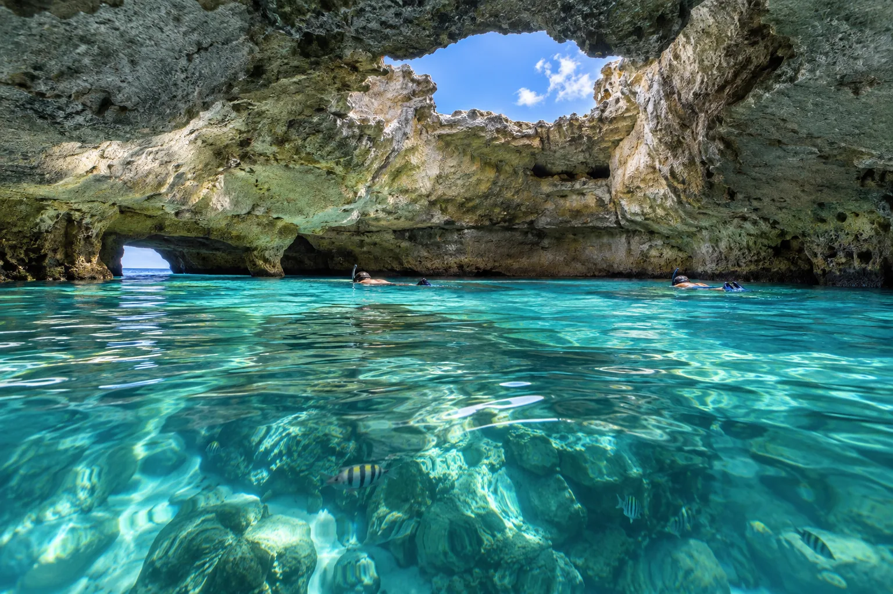

Thunderball Grotto
Exumas, Bahamas · snorkeling

Grotte marine creusée dans un îlot, éclairée par des puits de lumière. Célèbre depuis un James Bond.
- Lieu
- Exumas, Bahamas
- Niveau
- Intermédiaire
- Activités
- snorkeling
- Type d'eau
- Mer / océan
- Coordonnées
- 24.17, -76.45 (position approximative du secteur)
Dangers à connaître
- Courant violent hors étale.
- Plafond rocheux bas.
Le conseil d'Ocean Buddy
Entre à marée basse étale : le courant est très fort le reste du temps.
Ouvrir dans Ocean Buddy Télécharger sur l'App Store
Source : Fiche Ocean Buddy · septembre 2026 · à vérifier localement.